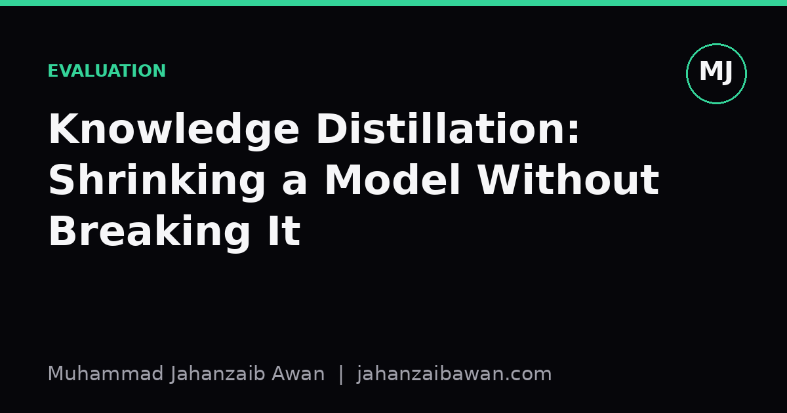

Knowledge Distillation: Shrinking a Model Without Breaking It
A smaller model can inherit a teacher's competence or its blind spots. The difference comes down to how carefully you evaluate, not how clever the distillation recipe looks.

Why compression is never free
Knowledge distillation has a seductive pitch: take a large, expensive teacher model, train a smaller student to mimic it, and get most of the performance at a fraction of the cost. In practice this works often enough that it has become a default step before deployment. But the pitch hides an assumption that I think deserves more scrutiny than it usually gets: that matching the teacher's aggregate accuracy on a held-out test set means you have preserved the teacher's behaviour. Those are not the same claim, and treating them as interchangeable is how a distilled model quietly ships with new failure modes that nobody noticed because the headline number looked fine.
The mechanics are simple enough to state in a sentence. Instead of training the student only on hard labels, you train it to match the teacher's output distribution, usually softened with a temperature parameter so that the relative confidences across classes carry more signal than a one-hot label ever could. If a teacher says an image is 70% cat, 25% fox, 5% everything else, that ratio tells the student something about the shape of the decision boundary that a bare label of "cat" throws away. This is genuinely useful. The problem is not the technique, it is the habit of evaluating it with a single aggregate metric and calling it a day.
Consider a concrete case. Suppose a teacher classifier reaches 94% accuracy on a held-out set of 10,000 examples, and after distillation the student reaches 92.5%. Most teams would call that a success: a small accuracy drop for a large reduction in parameters and inference latency. But a 1.5 point drop on 10,000 examples is roughly 150 examples changing outcome. The question that matters is which 150. If they are scattered randomly across classes, that is one story. If they cluster on a rare but safety-relevant category, that is a very different story, and the aggregate number will never tell you which one you are looking at.
Where the silent breakage actually happens
The first place I'd look is class-conditional performance, not just overall accuracy. Split the test set by label and compute accuracy, precision, and recall per class for both teacher and student, then look at the delta. In my own comparisons across smaller projects, the pattern that shows up again and again is that distillation preserves performance well on the majority classes, because that's where most of the soft-label signal is concentrated, and it erodes performance on minority or edge-case classes, precisely because there's less data and less gradient signal pushing the student to match the teacher there. A model can lose four points of recall on a rare class while gaining nothing on the majority classes, and the weighted average will still look almost unchanged.
The second place is calibration. Temperature scaling during distillation changes the shape of the soft targets, and it's easy for a student to end up with a different confidence profile even when its hard-label accuracy matches the teacher closely. This matters a great deal if the model's outputs feed into any downstream thresholding, such as "only act on predictions above 90% confidence". A student that is systematically overconfident or underconfident relative to the teacher will trigger that threshold at different rates even with identical accuracy, which silently changes the operating behaviour of the whole system without changing the metric anyone is watching.
The third, and the one I think gets least attention, is behavioural consistency on near-duplicate or adversarially close inputs. Two models can have identical accuracy on a test set while disagreeing with each other on a meaningful fraction of individual examples. If you only ever compare each model to ground truth, you never see this disagreement. But agreement between teacher and student, measured example by example rather than in aggregate, is the more honest signal of whether distillation actually transferred the teacher's decision function or just approximated the same accuracy through a different, less stable route.

Building an evaluation that would actually catch this
None of this requires exotic infrastructure, but it does require deciding in advance what you're going to check, because it's very easy to stop at the first metric that confirms what you hoped to see. A sensible minimum: report accuracy or the relevant metric per class, not just overall; report teacher-student agreement rate on the test set as its own number, separate from either model's accuracy against ground truth; and report a calibration comparison, even something as simple as the mean confidence on correct versus incorrect predictions for both models side by side.
It's also worth being deliberate about the split you evaluate on, since distillation introduces its own leakage risk that's easy to miss. If the student is trained on teacher soft labels generated from the same training set used to build the teacher, and your test set was involved in any hyperparameter tuning for either model, you're no longer measuring generalisation for either model, you're measuring how well two models memorised overlapping information. A held-out set that neither the teacher's training nor the student's distillation ever touched, checked once at the end, is the only way to know the numbers mean what you think they mean.
Finally, treat the smaller model as a new system to be characterised, not as a smaller copy of a known one. It has its own error surface, its own calibration, its own edge cases, even if the training procedure was explicitly designed to make it resemble the teacher. The whole appeal of distillation is efficiency, but efficiency in inference cost buys you nothing if it comes with an efficiency in scrutiny, where a smaller model gets a smaller, lazier evaluation simply because it inherited the teacher's reputation along with its weights.
The practical takeaway
Knowledge distillation is a genuinely useful tool, and soft targets do carry real information that hard labels discard. The risk isn't in the technique, it's in the evaluation culture around it: checking one aggregate accuracy number, seeing it close to the teacher's, and moving on. A student model that matches the teacher's overall accuracy can still disagree with it on a meaningful share of individual cases, perform worse on exactly the classes you can least afford to get wrong, and carry a different confidence profile into any downstream decision that depends on thresholds. Before trusting a distilled model in production, check per-class performance, check teacher-student agreement directly, and check calibration, all on a split that neither model has seen. That's a modest amount of extra work for the guarantee that shrinking the model didn't quietly change what it does.